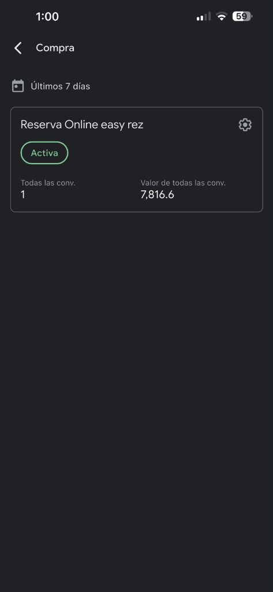
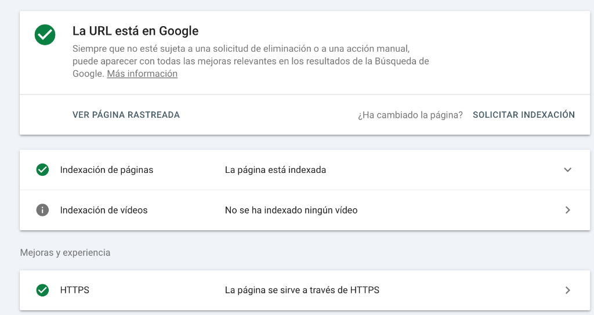
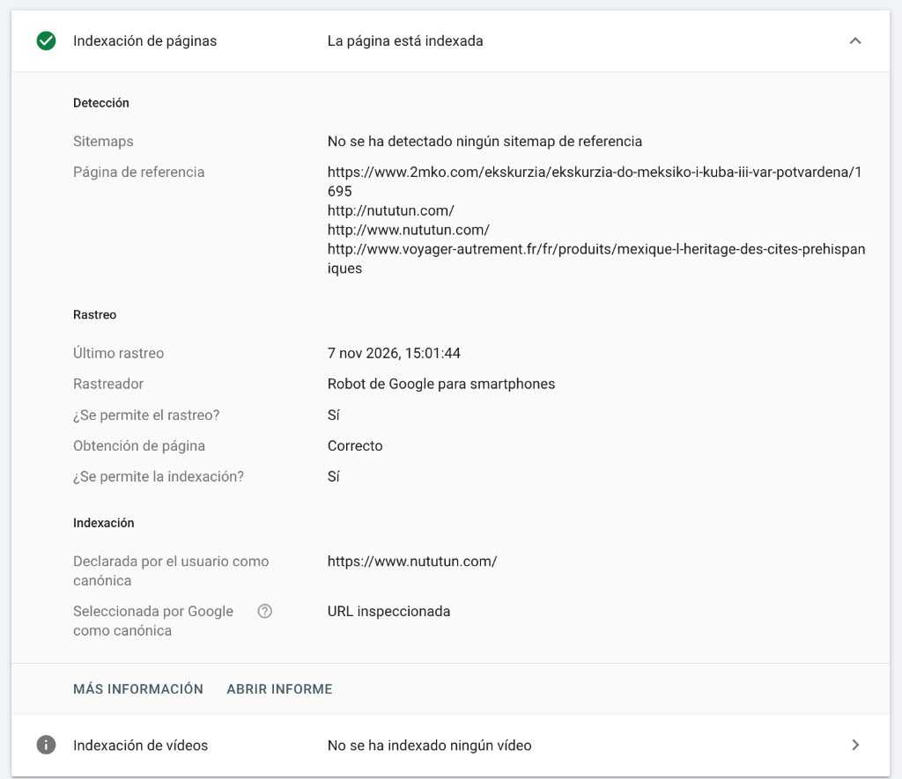
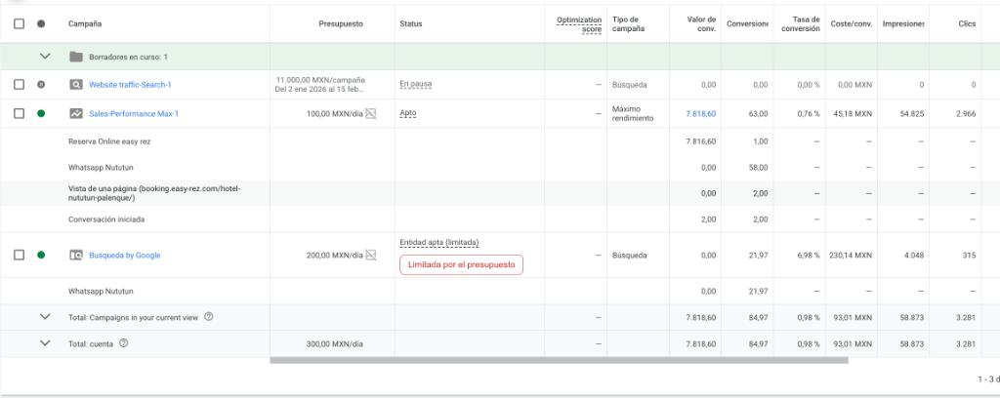
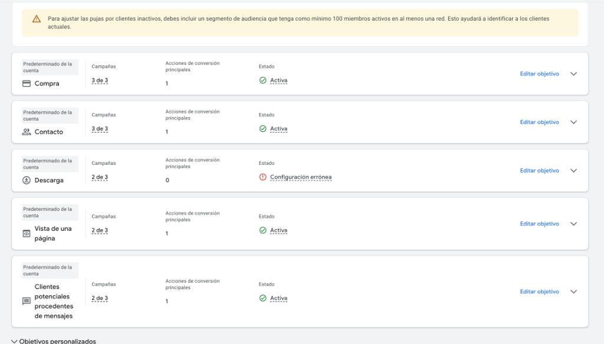
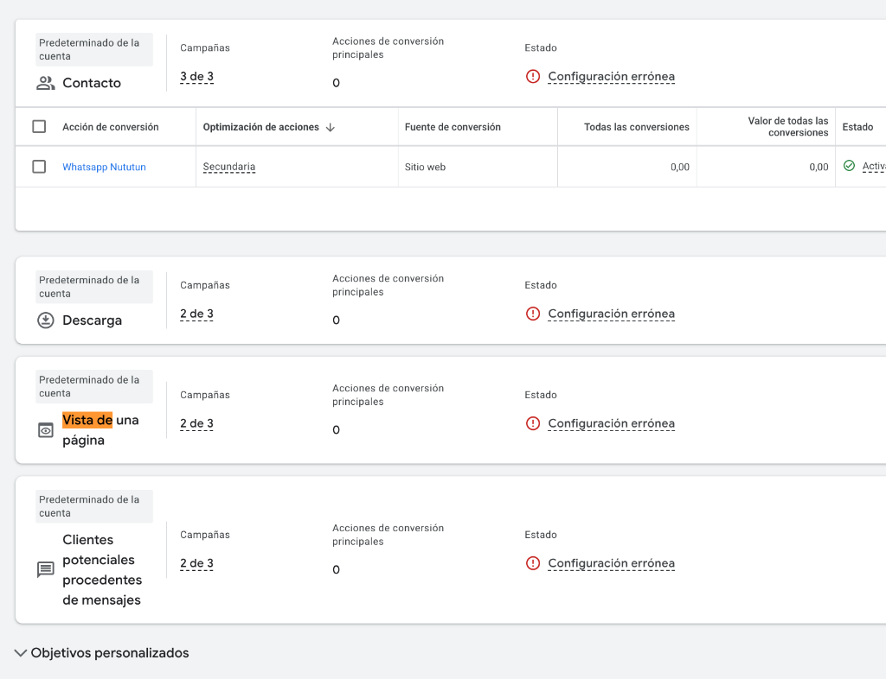
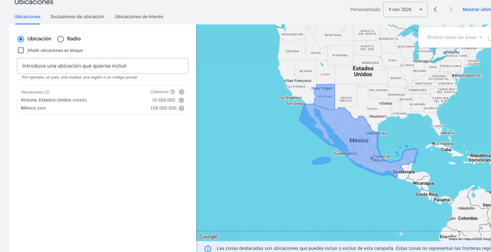
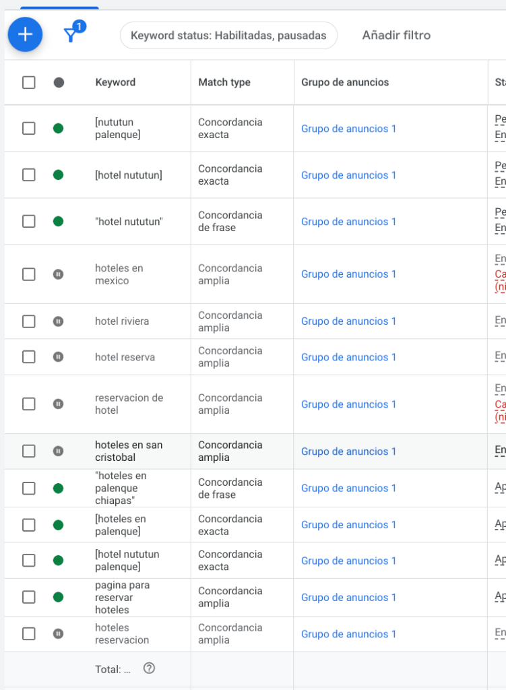
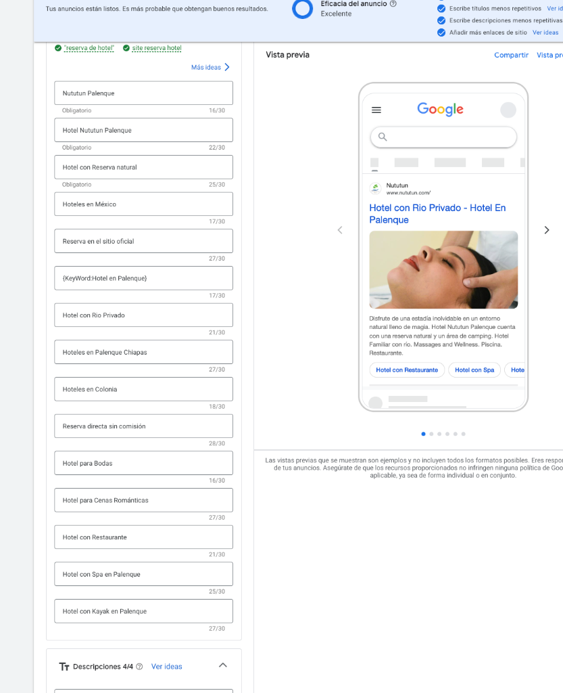

El diagnóstico cerró y la recuperación ya corre: el canal directo pasó de clínicamente muerto a medido y encendido. El contador de reservas volvió a la vida (primera reserva: $7,816.60), la cuenta de Ads se saneó completa — objetivos, geografía, keywords y copy — y la inversión se reactivó en modo controlado: $150 MXN/día máximo con medición real. El feed de tarifas a Google Hotels se consiguió sin costo (2 meses de Channex cortesía de Easy-Rez). El gasto que era ciego hoy apunta a reservas contadas en pesos.
Campañas, términos de búsqueda, historial de cambios, comparativa de subastas, ubicaciones, facturación y serie temporal — evidencia cruda archivada.
Última reserva medida 6 oct 2026; tag sin señal desde ~27 oct. Easy-Rez respondió: afirman tener los tags instalados (Ads 17834029108) y republicaron el sitio.
Del sitio al cobro con tarjeta vía OpenPay — la infraestructura de venta directa funciona. Depósito actual: 100% por adelantado.
Ficha verificada, categoría hotelera, 2,345 reseñas (4.5★). Actualizaciones pendientes de Google aceptadas.
La ficha vende exclusivamente por intermediarios (Expedia, Booking, Hoteles.com, Best Day, Trip.com, Agoda, Despegar, Vio, Super). El "Sitio oficial" no existe.
Sin conexión directa con Google. Ofrecen Channel Plus (Channex, $700 MXN/mes) como vía al feed de tarifas — cotización real para dirección.
~4,000 reservas con canal, segmento, fechas y estatus — la materia prima del frente de estadísticas (D2).
Sin medición real, el gasto no se justifica. ~$300 MXN/día (~$9,000/mes) protegidos hasta que el tag confirme reservas.
"Reserva Online easy rez" figura Activa y ya registró su primera conversión desde la reparación: 1 reserva por $7,816.60 MXN. La medición real volvió — cada reserva directa ahora cuenta y con su valor.
Objetivos limpios (solo reserva puja), Arizona fuera, marca protegida con 4 variantes, genéricas pausadas, copy de venta directa, sitemap e indexación en Search Console. Detalle completo en la bitácora (sección 04).
En la negociación, Easy-Rez cedió 2 meses gratuitos de Channel Plus (Channex) — activación 10–11 nov. Tarifa oficial, disponibilidad en vivo y Free Booking Links al carrusel. Continuidad ~$700 MXN/mes desde ~ene 2027 si los datos lo justifican.
Saldo recargado: Search a $100/día (marca + destino) y PMax contenida a $50/día — quema máxima $150/día vs los $300+ que corría antes. Cada peso apunta a reserva medible.
~4,000 folios: mix de canales (2% web, 18% cortesías, 26% grupos), temporada mes a mes, origen del huésped (Francia = 31%), antelación mediana 66 días, pico de cancelaciones jun–ago. Informe D2 vivo y en crecimiento.
Vigilar términos de búsqueda reales, reservas atribuidas a cada campaña y calidad del gasto. PMax se mantiene solo si aporta reservas — si vuelve a inflar ruido, se pausa.
Cuando Easy-Rez confirme: verificar en Google Travel que la tarifa oficial aparece junto a las OTAs y que el enlace aterriza en el motor. Captura de evidencia para el informe 01B.
✓ Sitio web corregido a https:// · pendiente: revisión de fotos, atributos del hotel y respuestas a reseñas — la ficha debe estar lista para recibir al clic directo del carrusel.
Informes 01, 01B, 01C y D2 — el análisis conjunto con Easy-Rez quedó para el 23 nov; la presentación de resultados se agenda después de ese corte de datos.
| Decisión | Opciones | Impacto |
|---|---|---|
| Feed de Google Hotels | Resuelto: 2 meses de Channex cortesía de Easy-Rez (activación 10–11 nov); continuidad ~$700/mes a partir de ene 2027 si rinde | Tarifa oficial en el carrusel sin costo inicial; la medición decide la renovación con datos reales |
| Política de anticipo | 100% por adelantado (actual) · depósito parcial / primera noche | Frente a OTAs que ofrecen "pagar en el hotel", el anticipo total puede frenar la conversión directa |
| Reactivación de Ads | Ejecutada: modo controlado — Search $100/día + PMax $50/día con medición real | Mitad del gasto anterior, todo apuntando a reserva; escala solo si las reservas atribuidas lo justifican |
| Sitio web | Decidido: Easy-Rez lo mantiene (WebSite PRO/Duda) — responden, modifican y ahorran operación | Nosotros conservamos medición y estrategia; ellos la operación del sitio — reparto correcto tras la buena respuesta del proveedor |
Correcciones ejecutadas con acceso completo a Ads, Analytics, Search Console y GBP (9 nov 2026). Se documenta cada cambio para trazabilidad.
| Cambio | Plataforma | Estado |
|---|---|---|
Sitemap enviado — https://www.nututun.com/sitemap.xml declarado a Google; la indexación orgánica no estaba registrada | Search Console | ✓ Hecho |
| Inspección de indexación — home indexada, HTTPS correcto, último rastreo 7 nov; "sin sitemap de referencia" confirmado → se envió y se solicitó indexación prioritaria. Backlinks orgánicos detectados de operadores turísticos internacionales (checo y francés) | Search Console → Inspección de URLs | ✓ Hecho — datos completos mañana |
| Objetivos de conversión corregidos (toda la cuenta) — WhatsApp, vista de página, contacto y mensajes pasaron a secundarios (solo observación). Único objetivo de puja: Reserva Online easy rez. Aplica a Search y a PMax — fin a optimizar por toques de WhatsApp | Google Ads → Objetivos | ✓ Hecho |
| Segmentación geográfica corregida — Arizona eliminada como segmentación explícita de "Busqueda by Google" (quemaba presupuesto fuera de mercado); PMax verificada con solo México. "Presencia o interés" se conserva en ambas: capta al turista internacional que planea el viaje — el mercado francés es el huésped #1 del hotel (D2) | Google Ads → Ubicaciones | ✓ Hecho |
| Keywords saneadas en "Busqueda by Google" — marca protegida con 4 variantes ([hotel nututun], "hotel nututun", [nututun palenque], [hotel nututun palenque]) + destino ("hoteles en palenque chiapas", [hoteles en palenque] reactivada). Pausadas las amplias genéricas: hotel reserva, página para reservar hoteles, hoteles reservación (además de méxico, riviera, reservación, san cristobal ya apagadas). PMax no usa palabras clave — opera por audiencias y recursos; no requirió cambios aquí | Google Ads → Palabras clave | ✓ Hecho |
| Copy del anuncio orientado a venta directa — títulos agregados: "Reserva en el sitio oficial", "Reserva directa sin comision", "Tarifa oficial del hotel"; eliminados "Hoteles en San Cristobal" y "Hoteles en Colonia" (irrelevantes) | Google Ads → Anuncios | ✓ Hecho |
| Performance Max revisada — sin cambios de keywords (no las usa); quedó con segmentación México, $100 MXN/día y objetivo limpio = solo reserva | Google Ads | ✓ Revisada |
| Reactivación controlada ejecutada — saldo recargado; PMax contenida a $50/día (fue la campaña que atribuyó la reserva de $7,816), Search a $100/día limitada por presupuesto. Quema máxima $150/día ≈ 13 días de prueba. Monitoreo: términos de búsqueda y reservas atribuidas a las 48–72h | Google Ads → Facturación | ✓ Hecho — 10 nov |









panel.easy-web.app (WebSite PRO sobre Duda): proyectos, estadísticas de interacción, contactos y automatización. El motor de reservas se administra en reservations.easy-rez.com/admin: consultas y reportes, motor, sitio web, traducciones y ajustes.